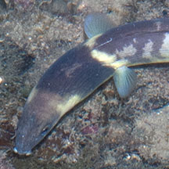
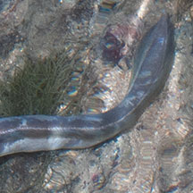
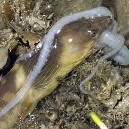
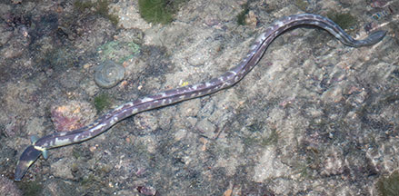
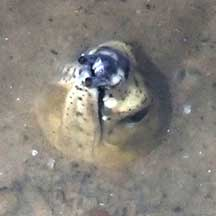
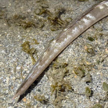
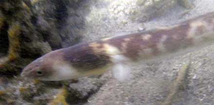
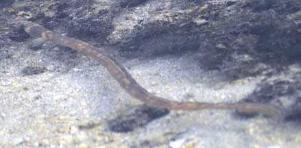

|
|
| fishes text index | photo index |
| Phylum Chordata > Subphylum Vertebrate > fishes > Family Ophichthidae |
| Evermann's
snake-eel Ophichthus lithinus Family Ophichthidae updated Oct 2019 Where seen? This fat long snake-like fish is sometimes seen in reefs on our Southern shores. It is much more active at night. During one visit to Sisters Island, four of these fishes were seen hunting among the corals! It was previously known as Ophichthus evermanni. Features: 30-40cm long. Body long thick cylindrical and is only flattened towards the very tip of the tail. Distinguished by a yellowish chin and two yellowish rings around the body, one behind the eyes and another at the pectoral fins. Body pattern of irregular large dark brown or purple blotches over a pale yellowish background. It lacks scales. The snout is blunt and it has tubular nostrils. The tail tip is bony and sharp so it can burrow quickly, both forwards and backwards! It has two comically tiny rounded pectoral fins, the dorsal fin very narrow, starts above the pectoral fins. It swims by moving the body in S-shapes, rather like a sea snake. Sometimes mistaken for sea snakes. Here's more on how to tell apart sea snakes, eels and eel-like animals. |
 Tubular nostrils. two yellowish rings, pectoral fins. Sisters Island, Aug 12 |
 Body flatter only towards the sharp tail. Sisters Island, Aug 12 |
 This one ate an octopus within minutes! Sisters Island, Feb 07 |
 Sisters Island, Aug 12 |
 Peeping out of a burrow on a sandbar Berlayar Creek, Nov 20 |
| What does it eat? It hunts fishes, octopuses, squids and cuttlefishes and crustaceans. It has granular teeth. |
 |
| Evermann's snake-eels on Singapore shores |
On wildsingapore
flickr
|
| Other sightings on Singapore shores |
 Terumbu Semakau, Aug 24 |
 Terumbu Raya, Mar 11 |
||
 Beting Bemban Besar, May 10 |
||
| Sisters Island, 31
Dec 08 Snake Eel from SgBeachBum on Vimeo. |
| Beting Bemban Besar, Jul 20 |
|
Acknowledgements Links Reference
|